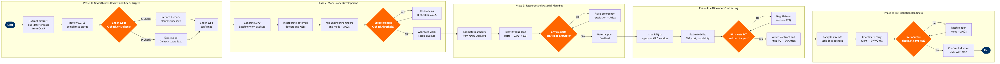

| Step | L4 Step Name | KPI / Target | Pain Point / Risk | Gate |
|---|---|---|---|---|
| 1.1 | Extract aircraft maintenance due-date forecast | Forecast horizon ≥12 months; 100% of fleet tails covered | CAMP data sync lag from ACARS can understate actual FH/FC by 1-2 cycles, risking check due-date miscalculation | |
| 1.2 | Review AD/SB compliance status per tail | Zero open mandatory ADs at check induction; SB review complete ≥90 days pre-induction | Rapid-fire AD releases (e.g. Boeing MAX ADs post-737 MAX groundings) can invalidate a pre-built work scope days before induction | |
| 1.3 | Determine check type: C-check vs D-check | Check type confirmed ≥9 months prior to induction date | Legacy aircraft approaching D-check thresholds (typically 8-12 years) may be upgraded mid-plan; late D-check designation inflates TAT and cost >40% | ⚠ |
| 2.1 | Generate MPD baseline work package in AMOS | Baseline work package issued ≥8 months prior to induction; manhour estimate accuracy ±10% | MPD revision cycles from Boeing (quarterly) can introduce new tasks after baseline is locked, requiring rework of the work package | |
| 2.2 | Incorporate deferred defects and open MEL items | 100% of Category A/B MEL items resolved at or before heavy check; deferred defect backlog cleared | MEL items deferred beyond permissible intervals can trigger unplanned component removals, extending TAT by 3-5 days | |
| 2.3 | Add Engineering Orders and requested modifications | All approved EOs incorporated ≥6 months pre-induction; no scope additions within 60 days of induction | Cabin modification requests (seat layout changes, IFE upgrades) arriving late can increase ground time by 5-10 days and require renegotiation of MRO slot | |
| 2.4 | Validate work scope against C-check threshold | Scope re-classification decisions completed within 5 business days of scope freeze; re-scope rate <5% of planned checks | Scope creep during D-check escalation is poorly controlled — cumulative EOs can push TAT from 21 days to 45 days without formal gate review | ⚠ |
| 3.1 | Estimate total manhours and skill requirements | Manhour forecast accuracy ±15% vs actuals; plan issued ≥6 months pre-induction | Structures trade skill shortages at third-party MROs (particularly composite repair) can stretch avail windows; market-rate labour cost escalation unpredictable >6 months out | |
| 3.2 | Identify and order long-lead rotable parts | 100% of long-lead parts (lead time >90 days) on order ≥6 months pre-induction; stockout rate at induction <2% | Boeing 737 MAX supply chain disruptions (e.g. Spirit AeroSystems fuselage quality holds 2024) can delay rotable availability by 4-8 weeks, forcing work scope deferral | |
| 3.3 | Raise material requisitions for consumables and hardware | All consumable PRs raised ≥90 days pre-induction; on-time delivery rate ≥95% | Spot-buy requirements for unplanned findings inflate procurement cost by 20-40%; Ariba spot-buy approvals can take 5-10 days, delaying line opening | |
| 3.4 | Confirm critical parts availability at MRO site | Parts readiness confirmation completed 30 days pre-induction; critical shortage count = 0 at induction | MRO-to-airline inventory visibility gaps mean shortages are discovered at induction rather than pre-induction, causing AOG-equivalent delays mid-check | ⚠ |
| 4.1 | Issue RFQ to approved heavy MRO facilities | RFQ issued ≥9 months pre-induction; minimum 3 qualified vendor responses received | Global MRO capacity constraints (post-pandemic backlog) reduce competitive vendor responses; sole-source situations remove cost leverage and inflate quotes by 15-30% | |
| 4.2 | Evaluate vendor bids on TAT, cost, and capability | Evaluation complete within 15 business days of bid close; cost variance between lowest and selected bid <8% | MRO vendors routinely under-quote TAT to win contract then invoke 'findings escalation' clauses — actual TAT can exceed quoted by 20-35%, disrupting aircraft utilisation plan | |
| 4.3 | Confirm bid meets TAT and unit cost targets | Contract TAT ≤21 days for C-check, ≤45 days for D-check; unit cost within ±5% of approved budget | Approval delays at VP level (budget cycles, contract committee scheduling) can compress negotiation window, forcing acceptance of sub-optimal bids | ⚠ |
| 4.4 | Award contract and raise PO in SAP | PO raised within 5 business days of approval; contract signed ≥6 months pre-induction | SAP Ariba–to–S/4HANA PO hand-off failures (integration errors) can delay cost commitment, blocking parts release and hangar slot confirmation | |
| 5.1 | Compile aircraft technical documentation package | Documentation package delivered to MRO ≥14 days before induction; zero missing mandatory documents at induction gate | Paper-based or siloed digital records from legacy line maintenance systems create gaps in technical records; missing logbook entries can halt induction pending FAA review | |
| 5.2 | Coordinate ferry flight and fleet schedule impact | Ferry flight confirmed ≥21 days pre-induction; schedule impact to revenue flying <2 affected rotations | Last-minute fleet reassignments to cover operational disruptions can pull the designated heavy-check aircraft back into service, delaying induction and incurring MRO slot-break fees | |
| 5.3 | Complete pre-induction readiness checklist | Checklist signed-off 7 days pre-induction; no-go rate due to planning gaps <3% | No-go decisions within 7 days of induction trigger MRO penalty fees (typically $15-25K/day for slot breaks) and ripple delay to subsequent planned checks | ⚠ |